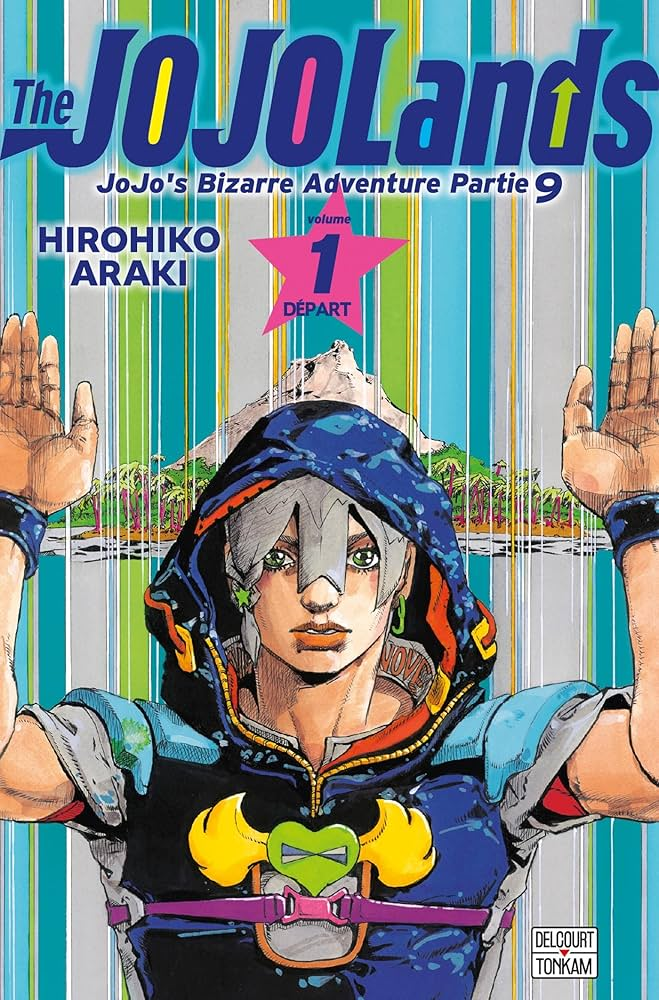

VIDA DIÁRIA
Artigo principal: A Villa na Ilha Havaí (Arco da História)
Jodio Joestar, um gangster do Havaí
Jodio Joestar apresenta a história como sua jornada para enriquecer no Havaí . Ele é mostrado com sua irmã mais velha, Dragona Joestar , em um barco, observando uma erupção vulcânica.
Em uma estrada na ilha de Oahu, dois policiais param uma caminhonete dirigida por Dragona, com Jodio no banco do passageiro. Um dos policiais, de olho em Dragona, finge prendê-los para criar uma oportunidade de abuso sob o pretexto de uma busca por drogas. Os irmãos reagem usando seus respectivos Stands para derrotar os policiais, incendiar a viatura para destruir as evidências e concluir com sucesso um negócio de drogas com gângsteres locais.
Jodio se apresenta e apresenta sua família, observando que Dragona tem preferência por moda feminina, e descreve a rotina diária de sua mãe, Barbara Ann Joestar . Ele também explica a conexão de sua família com a família Joestar e compartilha sua visão de mundo. Após uma viagem de ônibus para a escola, Jodio conclui uma venda de drogas com uma de suas veteranas, a extrovertida Usagi Alohaoe . Ele então elabora sobre sua filosofia de vida, centrada no conceito de "mecanismos", e seu sonho de ficar rico. Mais tarde naquele dia, Jodio, Dragona e um ladrão chamado Paco Laburantes , que também é um usuário de Stand , se encontram com sua chefe, Meryl Mei Qi. Meryl os informa que um turista japonês solitário chegou ao Havaí com um diamante valioso e encarrega o grupo de roubá-lo. Inesperadamente, Meryl designa um quarto membro para o grupo: Usagi.
Antes de partirem para a missão, Jodio e Paco decidem concluir mais uma transação de drogas. Na South King Street, em Oahu, uma mulher aborda Jodio, tentando comprar drogas, mas ele suspeita que ela seja uma policial. Apesar das suspeitas, eles finalizam a transação depois que ela o convence, com Paco indicando onde as drogas estão escondidas. A mulher então se revela como uma agente disfarçada da DEA, sacando uma arma e mostrando seu distintivo, enquanto outros policiais saem de um caminhão de sorvetes próximo para prender Jodio e Paco. No entanto, Jodio usa November Rain para destruir o pacote de drogas, forçando a polícia a liberá-lo, já que agora não têm provas.
Jodio lembra-se de ter sido forçado a fazer terapia na escola, onde um psicoterapeuta diagnosticou um possível transtorno de personalidade antissocial. Barbara Ann não acreditou no diagnóstico e exigiu o reembolso da consulta. Jodio está determinado a encontrar a felicidade através do trabalho árduo, mas detesta encontrar pessoas como aqueles policiais corruptos que não jogam limpo.
O ROUBO DE DIAMANTES
A VILLA NA ILHA HAVAÍ
Artigo principal: A Villa na Ilha Havaí (Arco da História)
A gangue contra Rohan Kishibe
No dia do roubo, Jodio, Dragona e Paco voam para a Ilha Havaí e esperam por seu novo aliado, Usagi, no aeroporto. Usagi chega atrasado e minimiza a situação, mas o grupo o inclui a contragosto. A equipe dirige-se à vila do turista japonês, onde Jodio explora a área primeiro. Embora o turista esteja em casa, parece que ele ficará ocupado nadando na piscina do jardim por um tempo, dando ao grupo a oportunidade de entrar sorrateiramente. Usagi usa seu Stand, THE MATTEKUDASAI , para se transformar em uma segunda câmera de segurança, produzindo uma gravação modificada do grupo com rostos disfarçados enquanto invadem a propriedade. Enquanto isso, Jodio observa a piscina e reconhece o turista como o famoso artista de mangá Rohan Kishibe.
Enquanto Jodio fica de guarda, o resto da equipe vasculha a casa e descobre um laboratório cheio de lava resfriada. Um gato entra na casa, fazendo com que Rohan saia da piscina. Jodio avisa seus companheiros e distrai Rohan com uma chuva leve. Enquanto isso, a equipe localiza o cofre e pega o diamante, ignorando outros pedaços de Rocha de Lava armazenados lá. Ao saírem da sala, eles são atacados por fios que se enrolam em seus braços ou pernas e penetram em sua carne. Embora a equipe consiga se livrar dos fios, o diamante cai misteriosamente da mochila de Paco, e Dragona volta para recuperá-lo. Rohan aparece e usa seu Stand, Heaven's Door , para incapacitar Paco e Usagi.
Jodio intervém usando November Rain para criar uma armadilha improvisada sob um tapete, já que sua chuva é forte o suficiente para fazer o piso de concreto ceder quando Rohan pisa nele. Jodio consegue amarrar Rohan, mas a fuga do grupo ainda está comprometida, pois Rohan viu seus rostos e leu suas identidades. Rohan menciona casualmente que não será a maior preocupação deles no futuro, mas o grupo ignora o aviso por enquanto. Por sua vez, Jodio descobre que Rohan veio ao Havaí para estudar as Rochas de Lava e que as amostras que o artista de mangá guarda em seu cofre são preciosas para ele. Quebrando uma amostra e ficando com a restante como forma de chantagem, Jodio força Rohan a mentir para a polícia sobre o roubo. Impressionado com a determinação de Jodio, Rohan o aconselha secretamente que ele pode ficar rico se manusear a Rocha de Lava com cuidado, mas não dá detalhes. Rohan também alerta Jodio sobre a falta de confiabilidade de seus companheiros de gangue.
GUERRA NA SELVA
Artigo principal: Hualālai - Tamanho do Gato (Arco de História)
Jodio lutando contra um trio de gatos
Na selva, o diamante e uma obra de arte preciosa que Usagi roubou de Rohan acabam perto de Jodio, levando o grupo a perceber que itens valiosos são atraídos pela Rocha de Lava. Nesse momento, o grupo é emboscado por um trio de gatos que possuem Stands . Enquanto Jodio pega o diamante, um fio se enrola em seu tornozelo, puxando-o para cima e deixando-o pendurado em um galho de árvore. Enquanto isso, outros fios costuram Dragona e Paco juntos, penetrando em seus corpos. Usagi, no entanto, consegue escapar.
Paco usa o Golpe para libertar o tornozelo de Jodio, permitindo que ele se defenda de um gato, mas os dois restantes os prendem em uma rede feita de fios, que se revela ser feita de seus pelos. Finalmente, Usagi intervém batendo o carro alugado na árvore. Ele revela que alimentou os gatos com caviar caro roubado da mansão de Rohan. Usagi instrui Dragona a fazer com que o MATTEKUDASAI se transforme em uma rede e atraia os gatos em direção à Rocha de Lava, fazendo com que os gatos sejam atraídos pela rocha devido às suas propriedades. Depois que Usagi captura os dois gatos, Jodio reflete sobre a natureza misteriosa da Rocha de Lava e suspeita que uma terceira pessoa esteja tentando obtê-la.
TESTANDO A ROCHA VULCÂNICA
Artigo principal: Kailua-Kona - Tempo de espera do voo (Arco da história)
Usagi e Dragona conferem relógios de luxo.
O grupo de Jodio relaxa após escapar da selva. Eles vão até um café onde Usagi confirma que qualquer coisa de valor considerável que tenha tocado a rocha inevitavelmente retornará a ela. Dragona então sugere um teste em uma loja de relógios de luxo, a Diamotch , para que possam entender completamente como funcionam os poderes da Rocha de Lava antes de embarcarem no avião.
Um novo inimigo se revela.
Dragona e Usagi entram na loja e tentam testar a Pedra de Lava em um dos relógios de pulso de US$ 80.000 . Embora o relógio desapareça e os funcionários acusem a dupla de roubo, eles logo são considerados inocentes e liberados.
Entretanto, Jodio e Paco descobrem um aviso sinistro em sua sacola de comida: as cabeças decapitadas dos três gatos com quem lutaram anteriormente. Jodio deduz que o dono dos gatos deve ser um inimigo tentando recuperar a Pedra de Lava. Paco sugere que eles devolvam a Pedra de Lava ao seu suposto dono original, mas Jodio argumenta que eles provavelmente sabem mais sobre a Pedra do que qualquer outra pessoa e acrescenta que não espera que o dono os deixe viver de qualquer maneira. De repente, o verdadeiro Paco retorna com comida, revelando que Jodio estava com um impostor. O impostor Paco então tira seu disfarce e ataca Jodio com uma faca, cortando seu pescoço.
UM NOVO ALIADO
Artigo principal: Kailua-Kona - Tempo de espera do voo (Arco da história)
Artigo principal: Rumo aos cinquenta bilhões de dólares (Arco narrativo)
Paco salva Jodio, mas este fica temporariamente incapacitado. Paco então enfrenta o inimigo em combate corpo a corpo. Embora Paco seja mais experiente e possa manipular seus músculos livremente, o inimigo empunha uma faca e tem a habilidade de se camuflar, chegando a desaparecer no ar. Após trocarem vários golpes, o inimigo desaparece novamente. Dragona e Usagi retornam da loja justamente quando o poder da Rocha de Lava faz com que o relógio caro retorne para Dragona, carregado por uma gaivota. No entanto, o inimigo reaparece, pega a Rocha de Lava e também apunhala Dragona no pescoço. Felizmente, Dragona desloca o ferimento para uma garrafa para se salvar. Além disso, Jodio fere o atacante com Chuva de Novembro, permitindo que o grupo siga o rastro de sangue.
A equipe segue o rastro até um carro estacionado à beira-mar, onde o inimigo embosca Jodio novamente antes de desaparecer. O grupo perde o rastro de sangue, mas como o inimigo está carregando a Pedra de Lava, eles usam o diamante como uma bússola para rastreá-lo. Eles o seguem até a costa, onde ele embosca Paco desta vez. Jodio agarra o inimigo e o arrasta para debaixo d'água. Embora o inimigo o prenda, Jodio consegue respirar usando o ar que vaza de um bote inflável que Usagi chuta na água. Ele então agarra o inimigo para forçá-lo a ficar debaixo d'água por mais tempo. Enquanto Jodio e o inimigo lutam debaixo d'água, Paco diz aos outros que percebeu que as cabeças de gato no saco de comida eram, na verdade, apenas batatas disfarçadas pelo Stand do inimigo. Assim, Paco decide salvar o inimigo e torná-lo um aliado para que possam se ajudar.
Homem encantador convidado para a equipe
A luta termina e a tripulação leva seu antigo inimigo, agora revelado como " Homem Encantador ", para Oahu. Homem Encantador está interessado na Rocha de Lava não por suas propriedades, mas porque ela vem das encostas do Monte Hualālai , onde seu irmãozinho Mauka desapareceu após cair em um dos túneis de lava e ser arrastado por uma misteriosa correnteza, junto com alguém espreitando nas sombras. Homem Encantador nunca encontrou seu irmão, e até mesmo os socorristas descartaram seu caso. Sua última pista surgiu quando ele viu Rohan conduzindo sua pesquisa. No aeroporto, Dragona e Usagi surpreendentemente recuperam o relógio de luxo, embora esteja quebrado. Após o voo, eles retornam a Iko Iko e apresentam o diamante e outros itens roubados a Meryl, além de apresentar Homem Encantador.
Meryl recrutando um jovem Dragona e Jodio
Dragona relembra um momento crucial em sua vida que levou à situação atual de sua família. Quatro anos atrás, Dragona sofria bullying de um colega de classe cujos pais eram ricos e influentes o suficiente para controlar o sustento dos funcionários da escola, tornando o agressor aparentemente intocável. Com a intenção de vingar Dragona, Jodio prendeu os colegas de classe de Dragona em um ônibus e o incendiou usando sua habilidade November Rain . Embora não os tenha matado, cerca de vinte alunos e o professor foram hospitalizados com queimaduras graves. Dragona suspeitava que Jodio fosse o culpado, mas manteve segredo, entendendo que era uma forma de apoio de seu irmão mais novo. Ao descobrir Smooth Operators, Dragona transferiu a cicatriz em seu peito, causada pela agressão, para uma colher, removendo a ferida.
Infelizmente, o incidente fez com que o pai de Jodio e Dragona perdesse o emprego na seguradora, pois foi pressionado pelos pais influentes do valentão de Dragona a concordar em pagar uma quantia exorbitante à empresa de ônibus. O pai deixou o Havaí e sua família para trás, mergulhando-os em tempos difíceis. No entanto, Meryl Mei acolheu os irmãos Joestar e lhes ofereceu uma proposta vantajosa para ambos. Assim, os irmãos Joestar se tornaram gângsteres trabalhando para Meryl em troca da proteção e até mesmo do prestígio que a vida no crime lhes proporcionava.
De volta ao presente, Dragona e Paco apresentam Charming Man a Meryl e explicam a história envolvendo o Monte Hualālai, a Rocha de Lava e Mauka. O principal obstáculo para o grupo é o dono das encostas do Monte Hualālai, uma empresa de desenvolvimento imobiliário chamada " HOWLER ". Meryl elabora um grande plano para reivindicar os direitos sobre toda a montanha.
O ROUBO DO REGISTRO DE IMÓVEIS
ATAQUE DO GROOVE DE BAGS
Artigo principal: A Vibe das Bolsas da Lulu (Arco Narrativo)
Jodio, Dragona, Paco, Usagi e Charming Man são enviados ao Cartório de Registro de Terras do Estado do Havaí. Lá, Dragona, Usagi e Charming Man entram no prédio para localizar as escrituras originais que comprovam que a HOWLER Company possui terras no Havaí. Usando seus Stands, o trio disfarça suas identidades com sucesso enquanto Charming Man pede para consultar as escrituras. Os funcionários acompanham o grupo até o arquivo, onde o funcionário apresenta as escrituras originais a Usagi e Dragona sobre uma mesa. Eles conseguem fazer com que a Pedra de Lava toque todas as 48 escrituras e saem rapidamente do escritório.
Bags' Groove ataca o trio
No entanto, quando Jodio e Paco chegam para buscá-los, Usagi repentinamente se sente mal. Ele desmaia no chão, vomitando e engasgando, enquanto Charming Man percebe que o pescoço de Usagi está coberto por crostas semelhantes a pedras. Por um momento, o grupo fica intrigado com a verdadeira natureza da situação. Usagi sufoca e precisa pedir a Dragona que use THE MATTEKUDASAI para se transformar em um canudo, perfurar seu próprio pulmão e inserir o canudo para respirar antes de ser levado para dentro da van. Depois de debaterem se Usagi está sendo atacado ou simplesmente sofrendo de abstinência, a equipe percebe que o atendente que os ajudou anteriormente está sendo levado em uma ambulância, sofrendo da mesma doença misteriosa. Charming Man decide investigar o pulmão de Usagi, usando Big Mouth Strikes Again para inserir seu globo ocular no corpo de Usagi. Ele descobre um Stand danificando os vasos sanguíneos de Usagi e tenta retirá-lo, mas também fica doente, desenvolvendo um tumor ao redor do olho. Ao mesmo tempo, Dragona também começa a adoecer quando outro Stand do mesmo tipo a ataca. Dragona consegue enviar Smooth Operators para dentro de seus corpos para capturar o Stand, e November Rain de Jodio o destrói usando uma gota de chuva enviada para a boca de Dragona, permitindo que eles respirem novamente. No entanto, Charming Man não consegue capturar o Stand inimigo dentro do corpo de Usagi e avisa que o Stand provavelmente está indo em direção ao cérebro de Usagi. Jodio então instrui Paco a dirigir até um hospital para que eles possam usar um aparelho de ressonância magnética para localizar o Stand e salvar Usagi.
Sem que a equipe soubesse, no Cartório de Registro de Terras do Havaí, um homem chamado "Agente" Bobby Jean e uma jovem chamada Lulu estavam investigando o incidente a pedido da HOWLER. Eles notaram uma discrepância entre o grupo que consultou as escrituras e o grupo que estava sendo atacado pelo Stand de Lulu, Bags' Groove . Decidiram então seguir o rastro dos heróis para eliminá-los.
NO HOSPITAL
Artigo principal: A Vibe das Bolsas da Lulu (Arco Narrativo)
Artigo principal: Lulu e Bobby Jean (Arco da História)
Hacca Howler, CEO da Howler Company
Jodio e sua equipe finalmente chegam ao hospital, mas vão por engano para a UTI, onde encontram a funcionária do cartório inconsciente. Seu pai, o congressista White , está presente e acredita que HOWLER a envenenou. Ele planeja tomar as terras de HOWLER, mostrando um documento em seu tablet, mas seu assistente o adverte para não fazer isso. O monitor de ECG da mulher repentinamente apresenta uma linha reta, e em seu pânico, o congressista deixa seu tablet para trás enquanto corre para o quarto de Sophie. Aproveitando a oportunidade, Dragona e os outros usam o tablet de White para enviar o documento, usando Operadores Suaves para arrastar sua impressão digital para o sensor.
Assim que o terreno é confiscado, Hacca Howler , CEO da HOWLER, é informado por seu banqueiro, Yokohama , do Dolphin Bank. Praticamente arruinado, Howler suspeita imediatamente que a Rocha de Lava esteja envolvida e liga para Lulu, instruindo-a a recuperá-la. Lulu e Bobby Jean eventualmente rastreiam o grupo, e Bobby Jean abre fogo contra eles usando seu Stand, Glory Days. Bobby Jean e Lulu vão para o saguão principal, esperando ter matado seus alvos, mas Lulu insiste em retornar ao nível do porão. No entanto, a gangue evitou ferimentos graves pelos tiros usando seus Stands para se defender. Enquanto isso, Usagi cria com sucesso uma ressonância magnética com THE MATTEKUDASAI, mas seus estados mental e físico continuam a se deteriorar. Dragona e Charming Man tiram fotos do interior do cérebro de Usagi usando a ressonância magnética, enquanto Paco e Jodio ficam de guarda perto do elevador. Bobby e Lulu saem do elevador assim que Paco entra para verificar o primeiro andar. De repente, vários tiros são disparados contra Paco enquanto ele está sozinho dentro do elevador, fazendo-o perceber que seus inimigos eram os dois que acabaram de sair. Enquanto isso, Yokohama chega ao hospital para pegar um remédio para o estômago, apenas para ser atingido instantaneamente na cabeça por uma bala perdida de Glory Days.
Jodio confronta o pistoleiro Bobby Jean.
Com Paco neutralizado, Bobby e Lulu tentam emboscar Jodio, mas este percebe a tempo que Lulu é uma usuária de Stand. Um tiroteio se inicia, durante o qual Jodio é forçado a fugir de Bobby Jean enquanto o assassino atira em civis e persegue Jodio. Enquanto isso, Charming Man e Dragona finalmente obtêm imagens do scanner e Dragona consegue enviar Smooth Operators para dentro do cérebro de Usagi para localizar e matar Bags' Groove. Infelizmente, Lulu joga pedaços de sua figura com mais Bags' Grooves anexados a eles e os envia para dentro de Usagi para emboscar Smooth Operators. Bobby Jean segue o rastro de Jodio até um beco sem saída e a luta continua nos banheiros. No entanto, como Jodio havia pegado a figura de Lulu anteriormente, alguns Bags' Grooves infectaram seu corpo e também o estão deixando doente.
Atirando em todas as barracas, Bobby Jeans força Jodio a usar November Rain e o encurrala. Jodio então finge tentar pegar algo do bolso, o que a princípio deixa Bobby desconfiado. No entanto, tentado pela ganância, Bobby dá um passo à frente, dizendo a Jodio para lhe mostrar a Pedra de Lava que poderia atrair riqueza. Ao fazer isso, Bobby Jean cai na armadilha de Jodio e uma das gotas de November Rain, que ricocheteou e grudou no teto, atravessa o crânio de Bobby Jean. Lulu, que testemunhou isso, relembra toda a sua música Bags' Groove por causa da tristeza. Enquanto chora, Jodio lhe diz que, depois que ela terminar o luto, irá com eles. Usagi também é salva e Paco está sendo tratado na UTI. Depois, o grupo encontra o detentor dos documentos de Yokohama. Embora a HOWLER Company saiba sobre eles, Jodio está confiante, pois eles obtiveram todos os documentos para reivindicar os ativos da empresa, e ele planeja reivindicá-los o mais rápido possível.
A COLEÇÃO DE ATIVOS
Artigo principal: 200 Balões e Olhos Mentirosos (Arco da História)
Após Jodio e seus companheiros saírem do hospital, Charming Man se faz passar por Yokohama e arma uma cilada no banco para que, quando Hacca Howler precisar depositar seus bens, seja em uma conta pertencente à gangue. Mais tarde, a gangue e Lulu se reportam a Meryl Mei Qi , que interroga a garota. Lulu revela que Howler não conhece nenhum dos membros da gangue, mas está ciente da existência da Pedra de Lava . Assim, por enquanto, Meryl ordena que todos se mantenham discretos e se certifiquem de que ninguém os esteja seguindo até que possam recuperar os bens de Howler, em sete dias. Enquanto isso, Hacca Howler é cercado por uma multidão de manifestantes. Ele é levado para um lugar seguro por três de seus capangas recém-contratados: Key West , um autoproclamado advogado; Laem Chabang , um policial; e Ningbo , um bombeiro. Hacca os encarrega de encontrar Lulu e eles já têm uma pista no histórico de pesquisa de Bobby Jean , uma foto de Paco de sua época no Exército.
A equipe vai até a propriedade de Howler para encontrá-lo e reivindicar suas terras antes que o governo possa intervir. Assim, Charming Man, disfarçado de Yokohama, Dragona e Jodio vão em direção ao iate de Howler, enquanto Paco e Usagi ficam de prontidão na costa. De repente, o grupo recebe uma mensagem codificada de Meryl Mei, informando que dois inimigos a encurralaram. Paco decide voltar para salvar Meryl. [ 24 ] Enquanto isso, Charming Man, Dragona e Jodio negociam com Howler, mas, de repente, o pedaço de Rocha de Lava de Dragona se espalha sobre a mesa e Howler fica desconfiado. [ 25 ] Jodio percebe que a Rocha de Lava está se deteriorando por causa do dinheiro ao redor e secretamente instrui Dragona a usar Operadores Suaves para falsificar as notas, interrompendo a deterioração, pois as notas perderiam seu valor. Vendo Jodio sussurrar, Howler os interroga violentamente sobre a Rocha de Lava, atirando na parede atrás deles. Ele abre uma mala e ordena que Dragona entre no dinheiro, mas fica chocado ao ver que nada acontece. Key West o informa que um incêndio começou no iate devido aos tiros disparados por Howler e que a polícia e os bombeiros os cercaram repentinamente. Charming Man insiste para que Howler finalize o negócio do terreno rapidamente antes que os policiais invadam o iate.
Em um flashback, é revelado que o pai de Paco imigrou do México para o Havaí e encontrou trabalho em uma granja de aves. Ele era um alcoólatra que frequentemente abusava de sua família, embora Paco ainda se importasse com ele. Depois de desmaiar bêbado na beira da estrada um dia, o pai de Paco acordou com um cadáver ao seu lado e foi acusado de assassinato. Paco cometeu fraude falsificando cheques para arrecadar dinheiro para a defesa legal de seu pai, mas acabou sendo preso em seu primeiro ano do ensino médio e abandonou os estudos. Meryl Mei encontrou Paco e o avisou que ele estava sendo manipulado pela máfia, que incriminou o pai de Paco pelo assassinato. Ela o incentivou a terminar os estudos e o convidou para conversar com ela no Iko Iko. No presente, Paco e Usagi descobrem que Meryl Mei foi violentamente sequestrada de seu escritório, levando Paco a jurar vingança.
Entretanto, Laem Chabang e Ningbo conseguiram extrair de Meryl Mei a informação de que sua loja de roupas, Iko Iko, é o esconderijo de suas atividades ilegais, fazendo sua mão explodir com os 200 Balões de Ningbo e usando os Olhos Mentirosos de Laem Chabang para detectar mentiras. Eles a levam até a boutique, seguidos de perto por Paco e Usagi, que se preparam para a batalha. Ningbo e Laem Chabang revistam o local e descobrem um quarto seguro no porão, onde Lulu e Yokohama estão escondidos. Paco aproveita a distração para quebrar os dentes de Ningbo e arremessá-lo para longe. Antes que Laem pudesse atirar em Paco, Usagi atira nela, forçando-a a recuar para o porão. Laem interroga Lulu, suspeitando que ela tenha recebido ordens de Howler para encontrar algo valioso. No iate, Howler continua se recusando a transferir suas terras enquanto as autoridades governamentais se aproximam. Key West recebe uma foto de Laem revelando a verdadeira condição de Yokohama, bem como uma mensagem de que Howler está procurando por uma Rocha de Lava ligada à sua fortuna de 50 bilhões de dólares. Paco e Ningbo continuam lutando; a mão direita de Paco incha e explode, mas ele consegue atingir o crânio de Ningbo. Antes que Paco pudesse finalizá-lo, Ningbo agarra a mão e o pescoço de Paco, fazendo com que comecem a inflar.
Paco usa o The Hustle para se libertar do aperto de Ningbo e enfia o punho na boca dele, fazendo com que sua mandíbula estoure devido à inflação na mão de Paco. Quando Ningbo exige a arma de Usagi, o THE MATTEKUDASAI se ativa e faz com que a arma dispare, matando-o. No porão, Laem Chabang usa Lyin' Eyes para interrogar Lulu sobre o que as pessoas do andar de cima estão tentando fazer com Howler e sobre a Pedra de Lava. Depois de extrair informações com sucesso, ela manda uma mensagem para Key West sobre a infiltração de Jodio e Dragona e a incentiva a encontrar a Pedra de Lava. O FBI apreende o iate de Howler e exige que todos evacuem. Key se aproxima de Jodio durante a evacuação e usa seu Stand, West End Girl , para prendê-lo e feri-lo. Jodio avisa Dragona e Charming Man que alguém além de Howler sabe do poder da Pedra de Lava e está tentando roubá-la. Enquanto isso, Hacca vai à capela particular de sua família no iate e se lembra de seu avô lhe mostrando o diário de Latrato, que contém uma mensagem enigmática sobre como encontrar novas Rochas de Lava. Examinando um crucifixo, Hacca percebe que ele é feito de fulgurito e deduz que Latrato encontrou a Rocha de Lava cavando onde fulguritos se formavam durante a lua nova. A Garota do West End ataca novamente pelas frestas entre seus cartões de identificação, esmagando o peito do Homem Encantador e roubando a Rocha de Lava de Jodio. Dragona arranca os cartões do Homem Encantador com Smooth Operators, rasgando sua carne junto. Ele recupera sua pele usando seu Stand. Quando os agentes do FBI perguntam por que a gangue ainda está no navio, Jodio percebe que a Rocha de Lava se escondeu no uniforme de um agente e avisa que o Stand que a controla está escapando pelas frestas.
Laem Chabang interroga Lulu no porão do Iko Iko sob a mira de uma arma, pressionando-a sobre o porquê de apenas ela ter sido informada sobre a Rocha de Lava e não os outros funcionários. Depois de confirmar que Laem Chabang e Key West pretendem trair Howler, Lulu revela que acredita que Howler é seu pai e ativa o Bags' Groove para sufocar Laem. De volta à nave, Dragona puxa brevemente a West End Girl de cima do agente do FBI, mas ela escorrega para debaixo do chapéu dele, esmagando seu cérebro. A West End Girl então viaja para debaixo dos óculos de outro agente, fazendo com que ele dispare vários tiros em pânico, matando outros agentes e fazendo com que Howler ouça os tiros em sua nave.
O médico de clínica geral de Meryl Mei, Dr. Roberts , chega ao Iko Iko e recebe a instrução de costurar os dedos dela e de Paco de volta. Enquanto isso, no porão, Laem Chabang desmaia por causa do Bags' Groove, e Lulu usa o telefone de Laem para ligar para Howler.